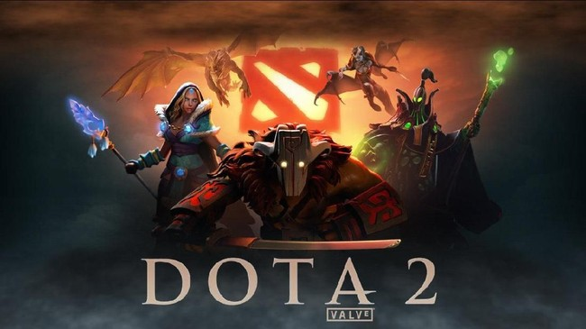
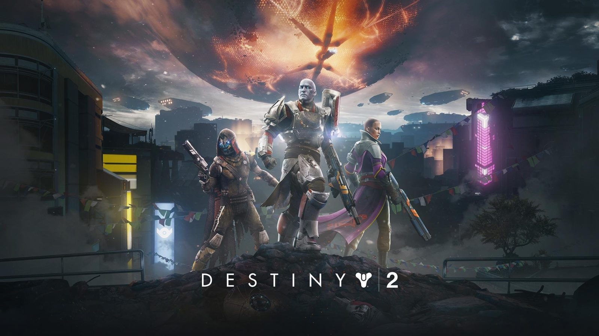
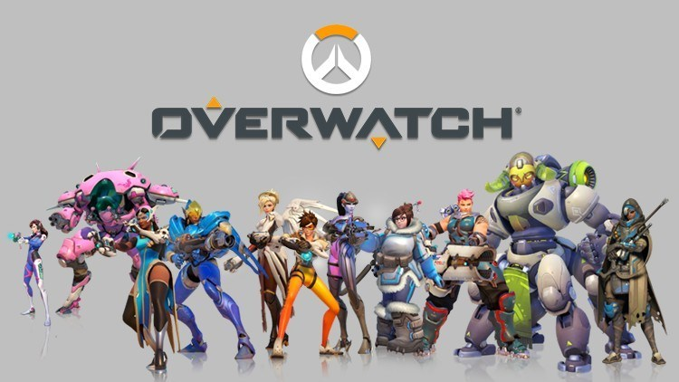
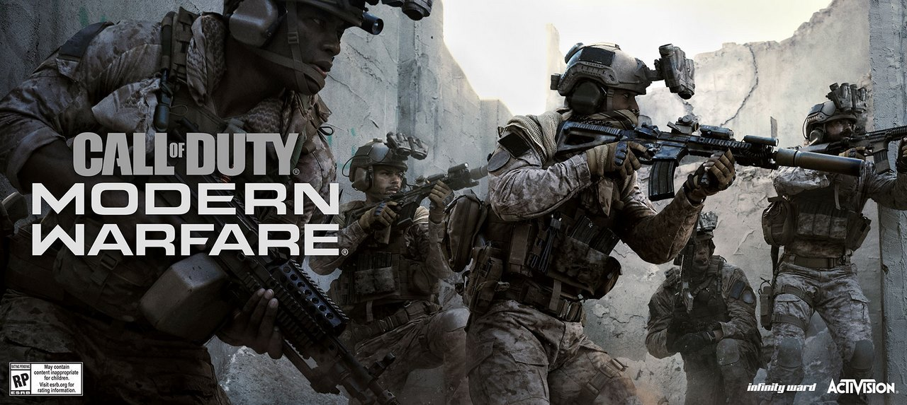

DOTA 2

Dota 2 mengadu 2 tim berisikan masing-masing 5 pemain, tim sebelah kiri disebut "Radiant" dan tim sebelah kanan disebut "Dire, dimana keduanya memiliki markas utama yang disebut Ancient dan tim pertama yang berhasil menghancurkan Ancient
lawan adalah pemenangnya. Terdapat 3 jalan atau jalur (disebut ‘lanes’) yaitu offlane (toplane untuk radiant dan bottom lane untuk dire) midlane dan safe lane (bottom lane untuk radiant dan top lane untuk dire) yang menghubungkan kedua
Ancient tersebut dan pasukan (‘creeps’) yang spawn atau muncul secara berkala setiap 30 detik di jalur-jalur tersebut, Setiap 'lanes' memiliki 3 menara yang akan menyerang hero atau creeps didekatnya (disebut 'tower'). Pada tower terakhir
terdapat 2 barracks yaitu melee barracks dan ranged barracks. Apabila melee barracks atau ranged barracks hancur, Maka creeps musuh akan bertambah kuat (disebut 'super melee creeps atau super ranged creeps', dan akan menjadi 'mega
creep' apabila kedua barracks dari ketiga lane telah dihancurkan), bertarung dengan ‘creeps’ lawan di sepanjang pertempuran menuju Ancient lawan.
Selain creeps yang ada di lane, untuk menambah pengalaman guna meningkatkan level serta mengumpulkan gold, sebagian pemain juga dapat 'farming' ataupun 'creeping' dihutan dengan membunuh natural creeps ataupun ancient creeps.
Untuk memperoleh keabadian (kesempatan hidup satu kali lagi saat terbunuh) dengan mengunakan aegis immortal, pemain harus bisa mengalahkan roshan, monster hutan yang berada di jalur parit yang memiliki armor yang sangat kuat. Dijalur parit
juga terdapat rune (seperti double damage, haste, bounty, invisible dan arcane), yang muncul secara berkala setiap 2 menit.
Masing-masing pemain dapat mengendalikan sebuah unit/ karakter yang disebut ‘Hero’ yang dipilih pada awal permainan. Terdapat lebih dari 100 Hero dengan type yang berbeda: Strength, Agility dan Intelligence. Setiap Hero memiliki 4 skill
(beberapa memiliki lebih) aktif maupun pasif. Dengan membunuh creeps, menaikkan level, membeli item dan membuat keputusan strategi, pemain akan berusaha menjelajah map untuk menghancurkan Ancient lawannya. Source :
Wikipedia
DESTINY 2

Mirip dengan pendahulunya, "Destiny", Destiny 2 adalah gim penembak orang pertama yang menggabungkan elemen permainan peran dan permainan gim online massively multiplayer. Destiny yang asli mencakup perjodohan sambil jalan yang
memungkinkan pemain untuk berkomunikasi hanya dengan pemain lain dengan siapa mereka "cocok" dengan permainan. Untuk berkomunikasi dengan pemain lain di dunia game, pemain harus menggunakan sistem pesan konsol masing-masing.
Destiny 2 menghadirkan cara perjodohan yang lebih optimal yang disebut "Guided Games", yang memungkinkan pemain untuk mencari klan yanG mungkin membutuhkan pemain tambahan untuk kegiatan, seperti serangan atau serangan.
aslinya, kegiatan di Destiny 2 dibagi di antara jenis permainan pemain versus lingkungan (PvE) dan pemain versus pemain (PvP). Source : Wikipedia
APEX LEGENDS

Apex Legends adalah mengusung konsep permainan battle royale dari permainan tembak-menembak pahlawan. Ceritanya sendiri dimulai 30 tahun setelah peristiwa Titanfall 2. Apex berbeda dari kebanyakan permainan battle royale dengan menggunakan Legend (karakter
pahlawan yang memiliki kemampuan unik dan memiliki peran seperti menyerang, bertahan, pendukung dan pengintai). Pemain dikelompokkan ke dalam sebuah tim dengan tiga orang, dengan masing-masing pemain memilih karakter Legend berbeda.
Setiap satu pertandingan, ada hingga 20 tim yang beradu jotos. Semua tim memulai tanpa peralatan dan diterbangkan ke atas peta permainan melalui dropship dari arah acak dan pemain lalu terjun ke sembarang tempat di peta yang dilalui
dropship. Setiap tim menjelajahi peta permainan untuk mencari senjata, amunisi, dan peralatan lainnya sembari berjuang untuk menjadi tim terakhir yang tersisa, dan berusaha tetap berada di zona aman yang terus menyusut. Seorang pemain
dapat terjerumus ke dalam kondisi kehabisan darah, yang membuat mereka hanya bisa merangkak untuk berlindung atau mencapai rekan satu regu yang dapat menghidupkan mereka kembali. Jika pemain kehabisan darah, atau lawan menggunakan
gerakan finisher, pemain akan mati dan menjatuhkan spanduk sehingga peralatan mereka dapat dijarah. Pemain yang mati dapat dihidupkan kembali jika rekan setimnya memulihkan spanduk dan membawanya ke Spawn Beacon dalam waktu terbatas.
Apex menampilkan fitur komunikasi obrolan suara dengan rekan satu tim dan pendekatan komunikasi satu tombol kontekstual yang memungkinkan pemain melakukan ping pada peta seperti senjata, lawan, atau titik temu.
Apex Legends adalah permainan gratis dan didukung melalui transaksi mikro, yang memberikan pemain kesempatan untuk menyesuaikan karakter pilihan mereka melalui berbagai barang kosmetik untuk Legend seperti senjata, jalur suara, dan spanduk
dalam permainan. Barang kosmetik baru dapat diperoleh dari membuka Apex Pack, nama kotak jarahan permainan ini yang berisi berbagai macam hadiah acak, atau Material Crafting dalam permainan. Apex Pack diperoleh secara gratis saat pemain
memperoleh poin pengalaman. Selain itu, pemain juga dapat mendapatkan Legend Token untuk bermain pertandingan, yang digunakan untuk membuka karakter Legend yang baru serta barang kosmetik tertentu. Kemudian Apex Coin, dibeli dengan
uang asli dan dapat digunakan untuk membeli Apex Pack, karakter Legend, ataupun membeli barang kosmetik tertentu.[1] Respawn berencana untuk menawarkan tiket pertempuran di masa depan yang memberikan hadiah kepada para pemain dengan
barang-barang kosmetik musiman dengan menyelesaikan tantangan dalam permainan. Source :
Wikipedia
OVERWATCH

Overwatch adalah game berbasis tim online yang umumnya dimainkan sebagai penembak orang pertama. Gim ini memiliki beberapa mode gim yang berbeda, terutama dirancang di sekitar pertarungan berbasis skuad dengan masing-masing dua tim yang masing-masing
terdiri dari enam pemain. Pemain memilih salah satu dari lebih dari dua lusin karakter pahlawan pra-dibuat dari satu dari tiga jenis kelas: Pahlawan kerusakan yang menangani sebagian besar kerusakan untuk menyerang atau mempertahankan
poin kontrol, pahlawan Tank yang dapat menyerap sejumlah besar kerusakan, dan Mendukung pahlawan yang menyediakan penyembuhan atau penggemar lain untuk rekan satu tim mereka. Setiap pahlawan memiliki kit keterampilan yang unik, mendefinisikan
atribut intrinsik mereka seperti poin kesehatan dan kecepatan lari, serangan utama mereka, beberapa keterampilan aktif dan pasif, dan kemampuan pamungkas yang hanya dapat digunakan setelah itu telah dibebankan melalui menangani kerusakan
pada musuh dan menyembuhkan sekutu. Pemain dapat mengubah pahlawan mereka selama pertandingan, karena tujuan desain Overwatch adalah untuk mendorong komposisi tim yang dinamis yang beradaptasi dengan situasi. Genre permainan ini telah
digambarkan oleh beberapa jurnalis sebagai "penembak pahlawan", karena desainnya di sekitar pahlawan dan kelas tertentu.
Permainan ini memiliki mode permainan untuk permainan kasual, permainan peringkat kompetitif, dan untuk mendukung kompetisi olahraga termasuk Blizzard's Overwatch League. Mode-mode ini umumnya berpusat di sekitar mengamankan kontrol titik pada peta, atau
mengawal muatan antara titik-titik di peta, dengan satu tim menyerang sementara yang lain bertahan. Mode-mode lain yang disisihkan untuk pertandingan kasual termasuk deathmatch solo dan tim, capture-the-flag, dan mode unik yang dijalankan
selama berbagai acara musiman. Pembaruan terbaru telah memungkinkan pengguna untuk membuat mode permainan mereka sendiri dengan seperangkat alat skrip yang terbatas. Karakter dan peta baru juga telah ditambahkan secara teratur ke dalam
permainan sejak diluncurkan, memperluas daftar pahlawan asli dari 21 menjadi 32 pada April 2020. Terlepas dari menang atau kalah, pemain mendapatkan pengalaman menuju level pemain, dan mendapatkan level baru , terima kotak rampasan
yang berisi item kosmetik yang bisa mereka gunakan untuk menyesuaikan penampilan karakter pahlawan tetapi sebaliknya tidak mempengaruhi gameplay. Kotak jarahan juga dapat dibeli melalui transaksi mikro. Source : Wikipedia
CALL OF DUTY : MODERN WARFARE

Modern Warfare adalah permainan pertama dalam seri Call of Duty yang berlatarkan perang modern, dan menampilkan beberapa senjata, perlengkapan dan kendaraan perang modern dari beberapa negara terkenal, salah satunya adalah Amerika Serikat, Inggris dan
Rusia. Jika pada permainan sebelumnya pemain akan memakai senapan lama seperti Bren, MP40 dan PPSh-41, maka di dalam Modern Warfare pemain akan memakai senapan modern seperti AK-47, M4A1 dan G36C. Pemain juga akan merasakan pengalaman
menjadi salah satu penembak senjata pesawat AC-130, sesuatu yang hanya bisa dirasakan oleh tentara Angkatan Udara saja.
Beberapa tipe operasi yang ada di dalam permainan ini adalah stealth mission (misi mengendap-endap tanpa diketahui pihak musuh), open warfare (pertempuran terbuka), urban warfare (pertempuran kota), support (membantu pihak kawan yang sedang bertempur)
dan assassination (membunuh target).
Source : Wikipedia